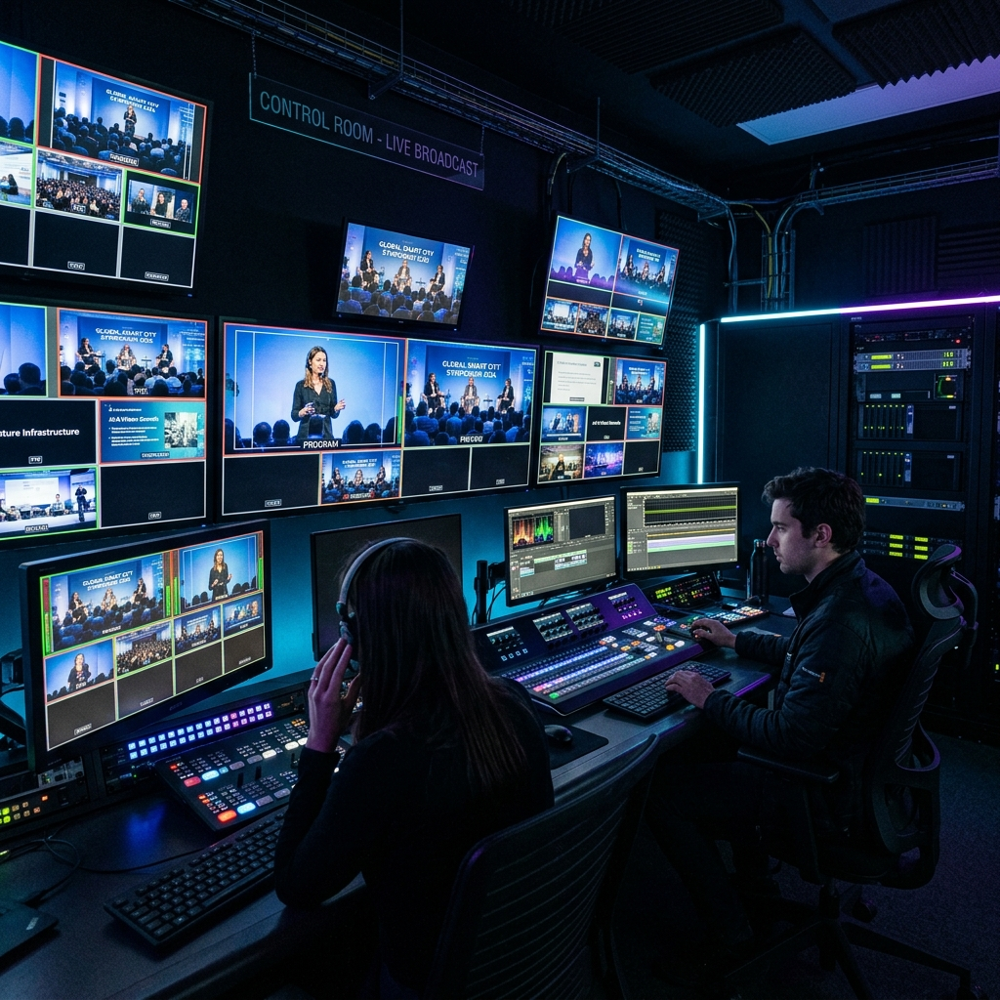

.png)

Multi-camera coordination, direct presentation feed integration, and real-time interactivity are no longer optional. Here are the technical best practices to deeply engage your remote audience during a high-stakes event.
A smart city conference naturally demands a smart, technologically flawless broadcast. When you are presenting cutting-edge urban technologies to global stakeholders, poor audio or pixelated visuals can instantly ruin the credibility of your highly technical presentations.
Pre-Production and Planning
A successful live stream is built weeks before the event. This involves mapping out camera angles, reviewing the venue's acoustic properties, and conducting rigorous stress tests on the local network. Detailed run-of-show documents ensure that the director knows exactly when to cut between cameras and slides.
The Multi-Camera Setup
Using a single fixed camera is a surefire way to lose viewer attention. A professional setup requires at least three cameras: a wide shot establishing the room's atmosphere, a tight tracking shot following the speaker, and an audience reaction shot. This dynamic switching keeps the broadcast engaging over long sessions.
Flawless Audio and Direct Feed Integration
Audio is actually more important than video in a corporate broadcast. Using high-quality lapel mics and routing audio directly from the mixer prevents room echo. Visually, never point a camera at a projector screen. Always route the speaker's presentation (PowerPoint/Keynote) directly into the broadcast mix for crystal-clear legibility via a Picture-in-Picture (PiP) layout.
Network Redundancy is Mandatory
Live streams fail when the internet fails. Relying solely on the venue’s Wi-Fi is a massive risk. Bonding multiple network connections—combining the venue's hardline ethernet with dual 5G cellular modems—ensures your broadcast stays online without dropping a single frame, no matter what happens to the local network.